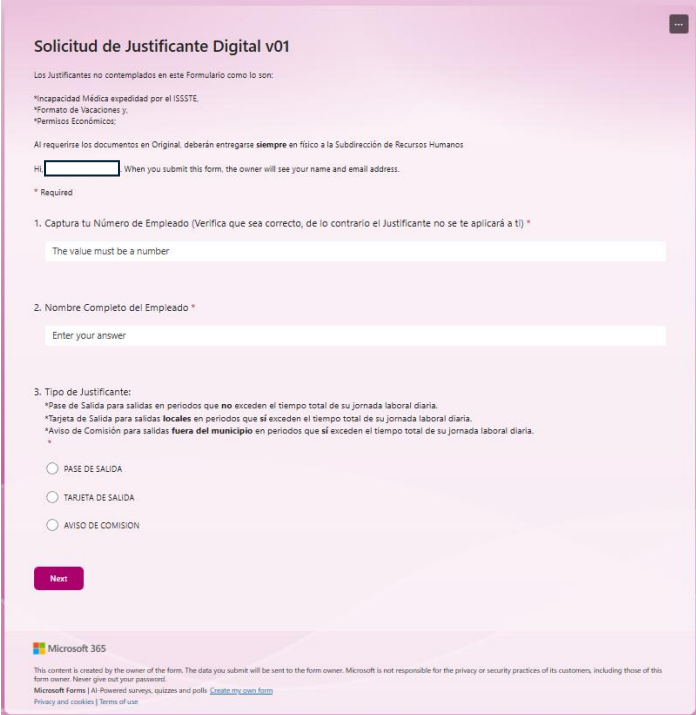
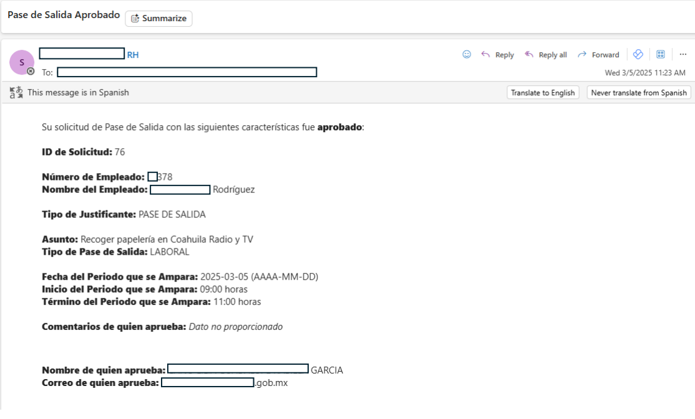
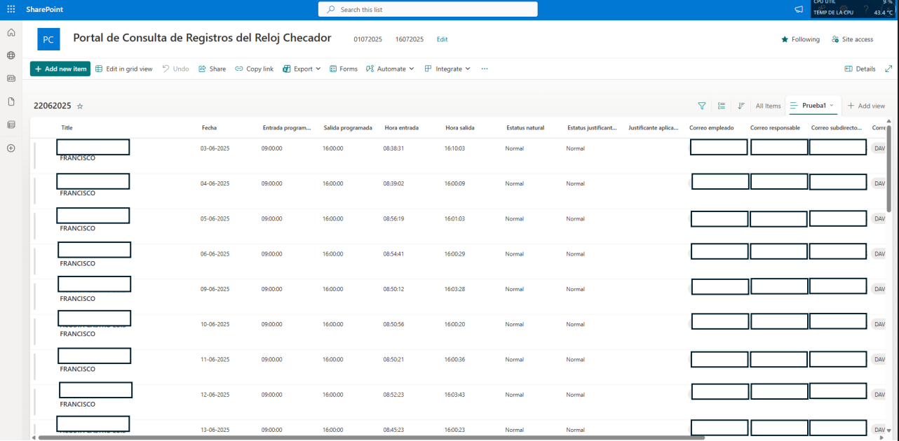
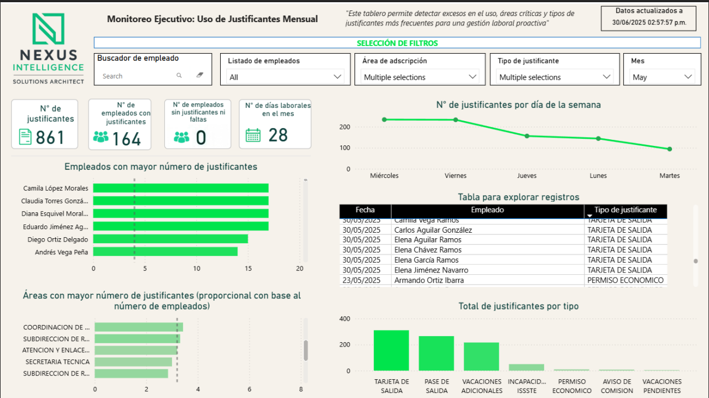

ASISTIX — Gestión de asistencias y justificantes
Solución Microsoft 365 lista para operación real para estandarizar solicitudes de justificantes, aplicar reglas, orquestar aprobaciones, centralizar evidencia y entregar reporteo listo para auditoría a RH y dirección.
1) Contexto / Problema
El control de asistencias y justificantes estaba fragmentado entre canales informales (correos/chats), archivos sueltos y hojas de cálculo, generando riesgo en nómina, huecos de auditoría y criterios inconsistentes entre jefaturas.
2) Solución
Entregables principales
- Captura centralizada vía Microsoft Forms con ramificación por tipo de solicitud.
- Reglas + aprobaciones en Power Automate (validación, ruteo, avisos, resultados).
- Trazabilidad con evidencia primero con almacenamiento controlado + vínculo por solicitud.
- Bitácora como fuente única de verdad para auditoría (solicitud + aprobador + timestamps + link de evidencia).
- Portal de reporteo con tableros Power BI embebidos en SharePoint.
Flujo de solicitud
- Empleado envía solicitud → se aplican validaciones → se envía aprobación
- Jefatura aprueba/rechaza → se notifica a empleado + RH (según aplique)
- Se actualiza bitácora + se vincula evidencia → tableros actualizan por la cadencia definida
Este diseño estandariza criterios y produce artefactos listos para auditoría por defecto.
3) Arquitectura
Datos
- Eventos de checado como fuente factual (SQL o export del sistema de reloj checador).
- Calendario empleado-día (una fila por empleado/día) para reconstruir estatus final.
- Catálogos (empleados, horarios, tipos, días festivos, actividades especiales).
- Bitácoras de justificantes (aprobado / físico / externo) con campos consistentes.
Automatización + Evidencia + Reporteo
- Power Automate: validaciones, orquestación de aprobaciones, avisos, endurecimiento con run-after.
- SharePoint / Excel Online: bitácoras controladas + tablas de parámetros + links a evidencia.
- Power BI: modelo semántico + tableros operativos/ejecutivos embebidos en SharePoint.
4) Funciones clave
- Ventana retroactiva aplicada por política (solo últimos N días hábiles).
- Reconstrucción diaria de estatus (Normal / Retardo / Falta / Justificado) con contexto completo de auditoría.
- Salidas listas para nómina (registros limpios para exportar/cargar en un rango de fechas configurable).
- Auditabilidad basada en evidencia: cada caso conserva aprobador, timestamps, link de evidencia y origen.
- Portal por rol: empleado vs vista de jefatura/equipo vs vista consolidada RH/dirección.
5) Métricas
Escala
- Empleados cubiertos: 120
- Solicitudes/mes: 400+
- Automatizaciones (flujos): 1
- Tableros: 4
Objetivos operativos
- Cadencia de actualización: diaria
- Modos de falla eliminados: pérdida de correos, criterios inconsistentes, evidencia faltante
6) Pantallas
Agrega aquí solo tus pantallas más fuertes. Todo lo demás va en el PDF anexo. Reemplaza los nombres de archivo por tus capturas exportadas reales.




Anexo
Usa tu folleto / PDFs de preview como anexo compacto (pantallas, diagramas, extras).
7) Siguientes mejoras
- Reemplazar almacenamiento de parámetros/bitácoras basado en Excel por Dataverse para mejor gobernanza, ALM y seguridad.
- Agregar escalamientos/recordatorios por tiempo + tablero de antigüedad de aprobaciones para control gerencial.
- Formalizar empaquetado Dev/Test/Prod (estructura de soluciones, connection references, variables de entorno).